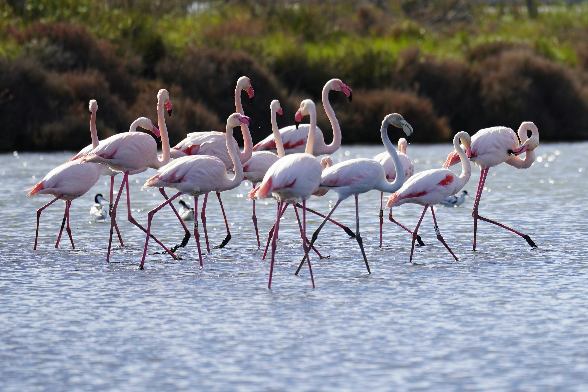
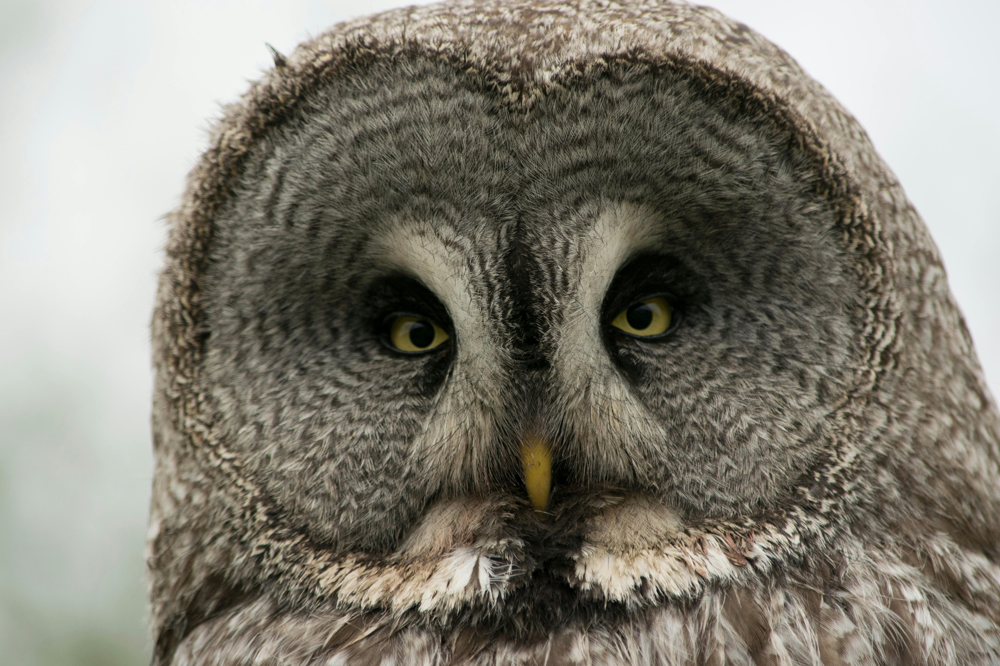
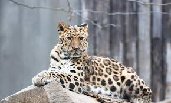
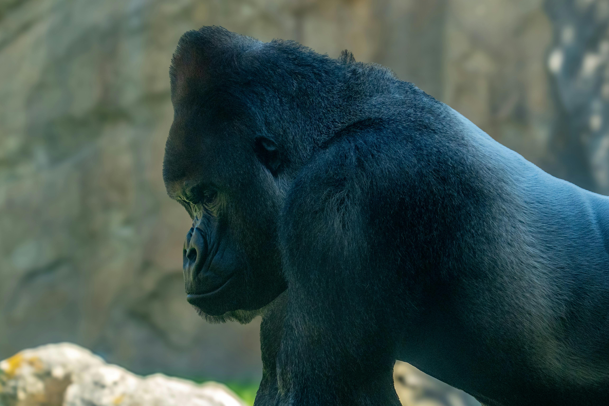

Hippos in the lake.
Biography
Let's take a deep dive into my favourite pictures of different species I have studied over time
Class Mammalia is a group of warm-blooded vertebrates defined by hair or fur and mammary glands that nourish their young. With advanced brains and lungs for breathing air, mammals inhabit nearly every environment on Earth and play essential roles in natural ecosystems.
Known as the "king of the jungle," lions are social animals that live in prides. They are apex predators and play a crucial role in maintaining the balance of their ecosystems.

Two young male African lions resting in their natural savannah habitat.
The largest cat species, tigers are solitary and powerful predators. They are known for their distinctive orange coats with black stripes and are critically endangered due to habitat loss and poaching.

A tiger in its natural forest habitat.
The largest land animal, polar bears are adapted to life on sea ice. They are excellent swimmers and rely on the Arctic ice for hunting seals.

A polar bear in its natural Arctic habitat.
These predators feed on a variety of prey depending on their habitats. In the Savanna the lion feasts on herds of buffaloes and zebras, in the forest the tiger hunts deer and other forest animals, and in the Arctic the polar bear hunts seals.
Class Aves is a group of warm-blooded vertebrates defined by feathers, beaks, and the ability to lay eggs. They are highly diverse and inhabit nearly every environment on Earth, playing crucial roles in ecosystems as pollinators, seed dispersers, and insectivores.
Known for their impressive size and sharp talons, eagles are powerful birds of prey. They are found in various habitats across the globe and are known for their exceptional eyesight and hunting prowess.

An eagle looking in the distance with its sharp eyesight.
These birds are known for their pink coloration, which comes from the carotenoids in their diet. They are found in shallow lakes and lagoons across Africa, Asia, and the Americas.
Flamingoes standing in shallow water with their distinctive pink plumage.
Owls are nocturnal birds of prey known for their silent flight and exceptional night vision. They have specialized adaptations for hunting at night, including large eyes and sensitive hearing.
An owl perched on a tree branch with its distinctive eyes looking out into the night.
These birds play vital roles in ecosystems as pollinators, seed dispersers, insectivores, and predators. In forests they help control insect populations; on wetlands they disperse seeds; at sea they feed on fish; and during the day they hunt small mammals or insects depending on their species.
There are so many more species to explore and study beyond my collection. However some are nearly extinct due to habitat loss and human interference.
Here are some pictures of these rare endangered species
The rarest big cat in the world, the Amur leopard is a critically endangered species found only in the temperate forests of the Russian Far East and northeastern China.
An Amur leopard in its natural habitat.
Critically endangered, mountain gorillas are known for their gentle nature and strong family bonds. They are found in the dense forests of central Africa and are threatened by habitat loss and poaching.
A mountain gorilla in its natural forest habitat.
The African Forest Elephant is a critically endangered species due to poaching and deforestation found in the dense forests of central and western Africa. They are smaller than their savanna counterparts and have straighter tusks.

An African forest elephant in its natural habitat.
These endangered species face numerous threats, including habitat loss, poaching, and human-wildlife conflict. Conservation efforts are crucial to protect these animals and their habitats for future generations.
Here are more pictures in my wildlife photography collection.
A crocodile from ariel view.
Hippos in the lake.
A white tiger in a sanctuary.

Meerkats in their habitat.
These parks offer excellent opportunities to observe and learn about wildlife in a safe and controlled environment. In fact I took most of my pictures there.
In conclusion, wildlife photography is a powerful tool for raising awareness about the beauty and importance of the natural world. Through my lens, I hope to inspire others to appreciate and protect the incredible diversity of life on our planet. Thank you for joining me on this journey into the wild!